This project-demo shows how to create an interface that toggles the LEDs.
Be sure to view the overall Documentation for configuring the cloud storage (API key, Base ID, etc) and for more information on how the entire system works.
The Airtable is set up with 25 records, each one for an individual pixel in the 5x5 light matrix array. Each is initialized to zero: but will toggle between "0" and "100".
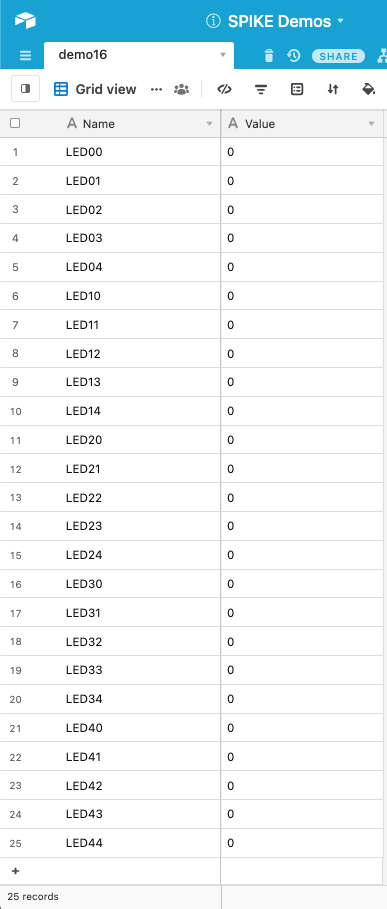
Service Dock
The remote page has the Airtable Service Dock element. Make sure to update the tablename attribute to match your table name.
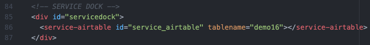Remote Interface
The interface has two parts:
- The left is a series of buttons that toggle through values (0, 100) and store them in the cloud
- The right is a space to "load" in images to try and match. (This just happens in the browser; it doesn't use the Cloud or SPIKE Prime at all.)
Here is the table for generating the array of buttons. Note there is a button at the top of the table (right side) for randomly generating the match image.
Each "toggle button" updates that position (LED + row + col) in the Cloud to be "0" (off) or "100" (on).
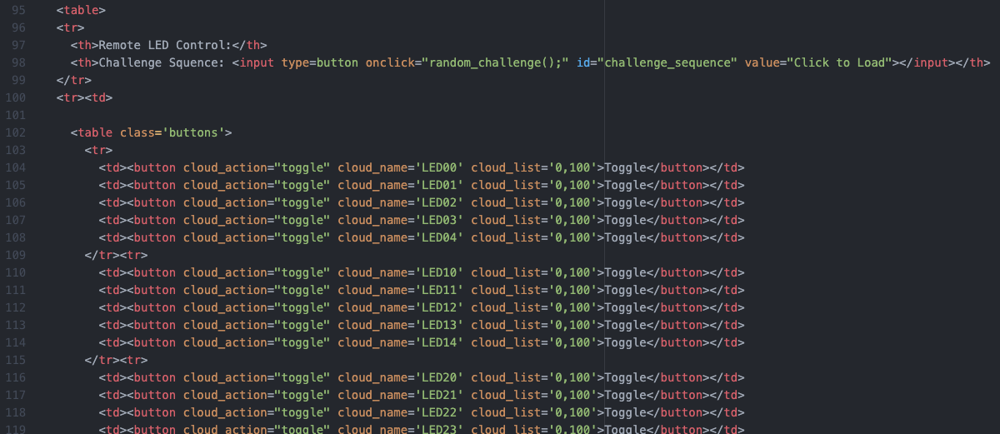Here is the table for generating the matching image:
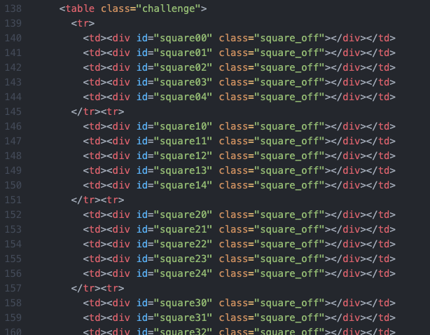This is what the interface will look like on the Remote Page. There are a collection of CSS Style attributes in the head of the document that are used for formatting the tables.
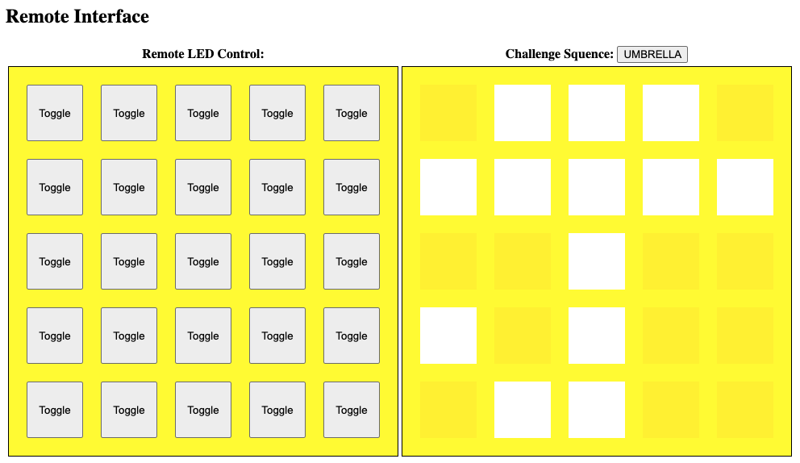This is the JavaScript that (1) has the images for matching and (2) randomly picks one and displays it in the "match" table on the right.
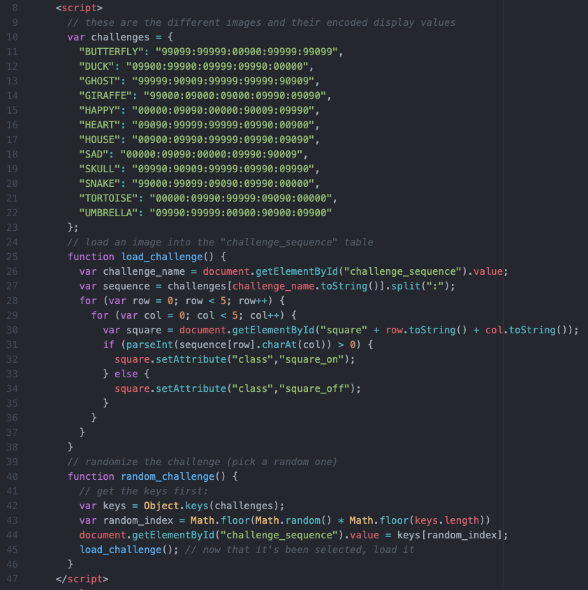
Service Dock
The local page has both the Airtable Service Dock element (make sure to update the tablename attribute to match your table name). There is also a single SPIKE Prime Service Dock element.
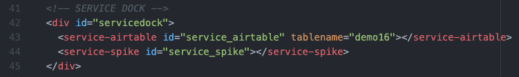Local Interface
The local page is monitoring all the different entries in the Cloud. This is just the same code over and over, each entry calling the
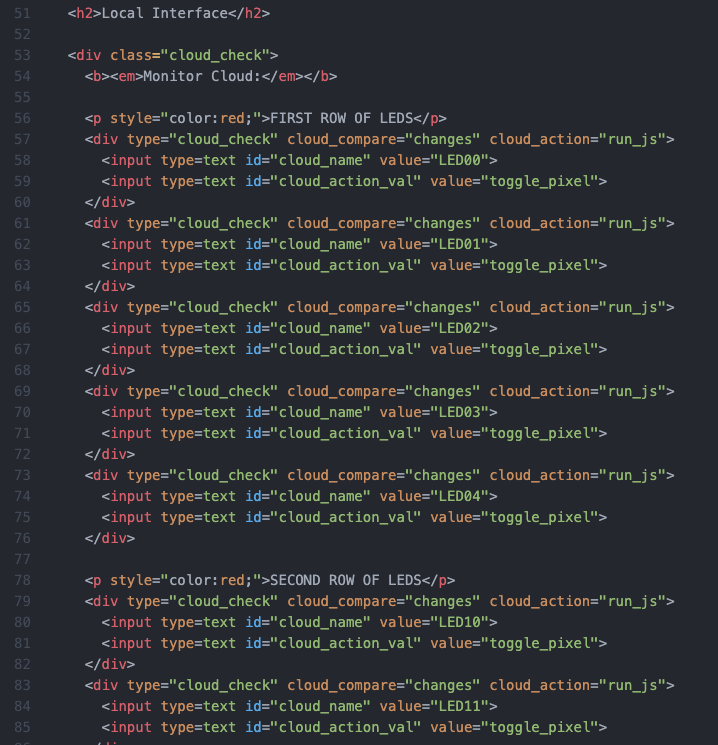toggle_pixelfunction.This is how the interface will look on the Local Page:
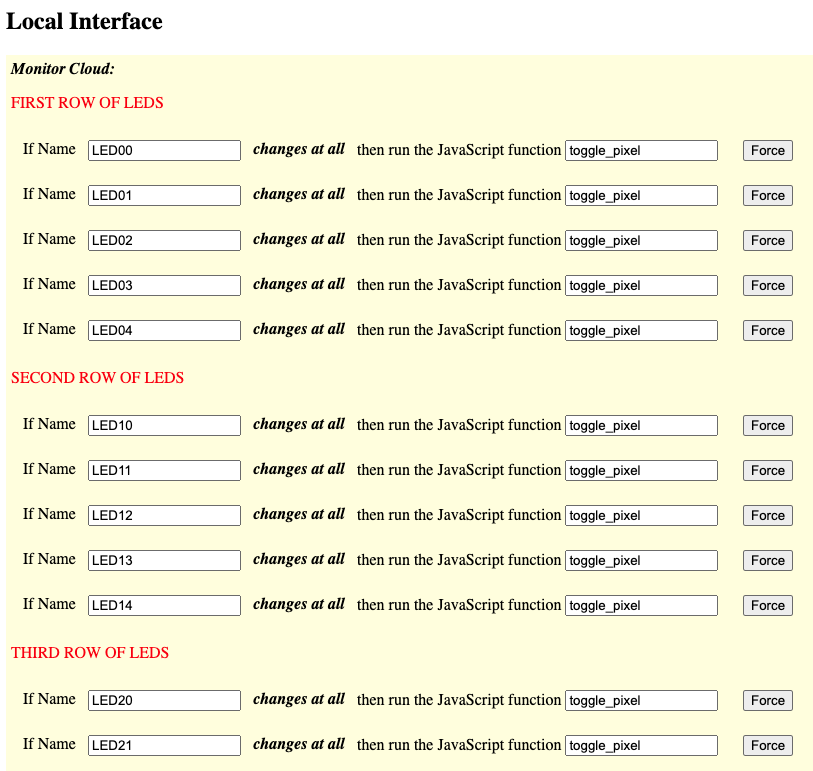This is the JavaScript code for updating the SPIKE Prime's pixel when the Cloud changes. We take in the name of the field (e.g. "LED34") and parse out the row and column (3, 4) and then set the pixel to equal the value ("0" or "100") in the Cloud.
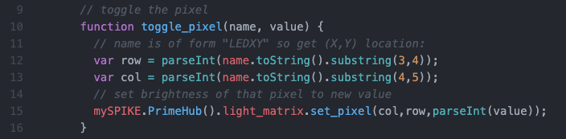Note that we want to initialize the SPIKE Prime's light matrix to equal whatever settings are in the Cloud when it first connects. To do this we are using several callback functions:
onload_post: this function is called when the page loads but after the Service Dock has been set up.mySPIKE.executeAfterInit(): this is set wtihin onload_post to be called after the SPIKE Prime is initialized. When it is (e.g. when the user has connected the SPIKE Prime) we then want to go through and update the display.The extra "sleep" has been added because if a sequence of JSON commands are issued to the SPIKE Prime too quickly then it'll miss some.
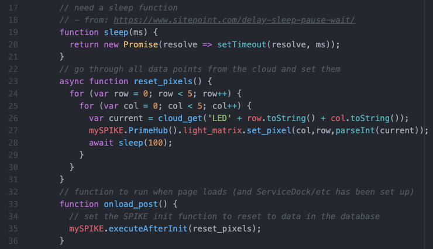